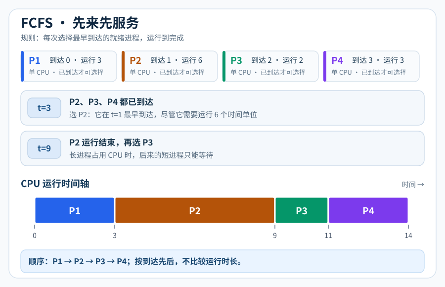
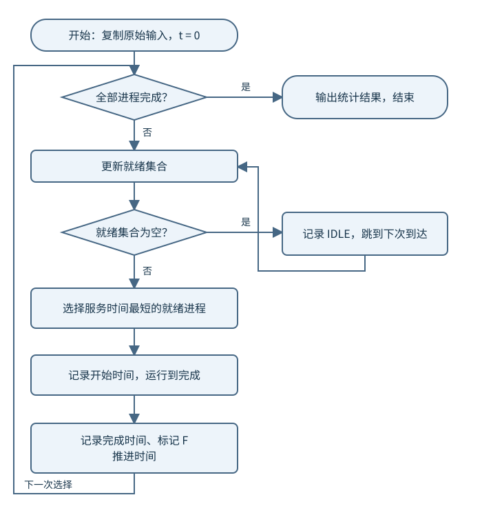
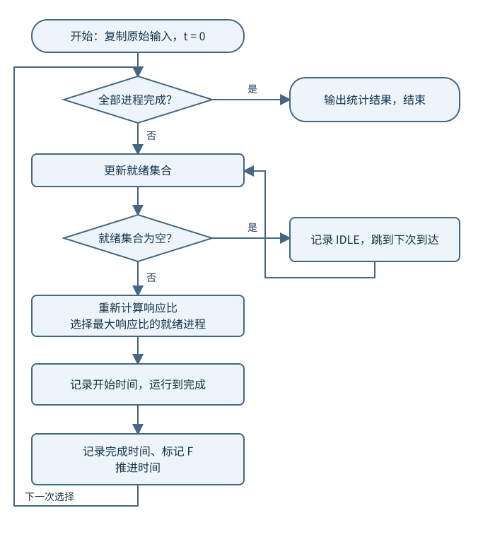
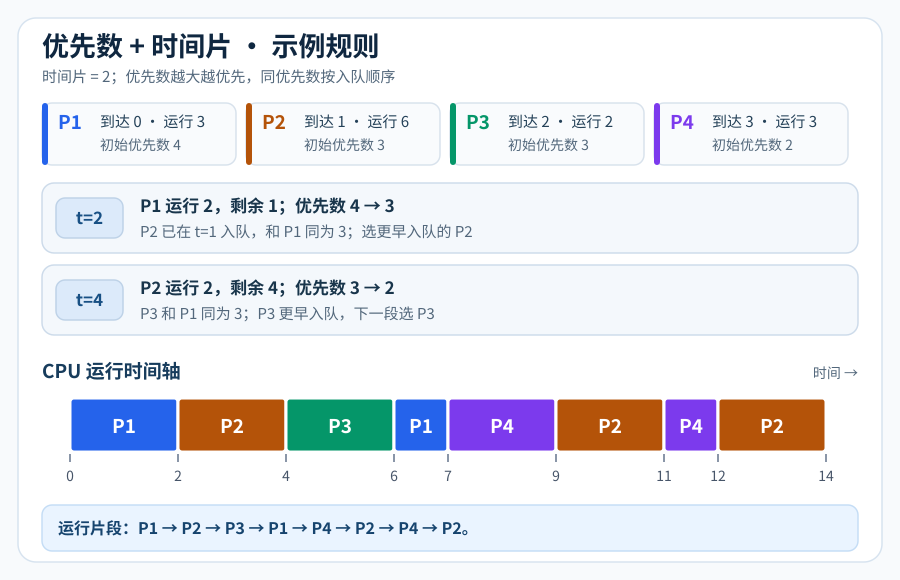

实验四：进程调度算法模拟
本次实验继续使用实验一配置好的 xv6-riscv 环境，在 xv6 中编写 C 用户程序 schedsim，
模拟单处理机上的四种调度算法：先来先服务（FCFS）、最短作业优先（SJF）、
最高响应比优先（HRRN）和基于最高优先数的循环轮转调度。
本实验中的“进程”由程序内的 PCB 数据结构表示，时间由程序中的变量推进。
四种算法决定的是 模拟进程的运行顺序。schedsim 本身是一个真实的 xv6 用户进程，
仍由 xv6 内核调度。本实验只修改用户程序和 Makefile，无需添加系统调用或修改内核调度器。
实验目标
完成本次实验后，应能够：
使用 PCB 保存模拟进程的到达时间、服务时间、优先数和运行状态；
根据当前就绪进程集合实现四种调度选择规则；
区分非抢占式调度与按时间片重新选择进程的调度；
正确处理 CPU 空闲、进程陆续到达、并列选择和多次运行；
计算等待时间、周转时间和带权周转时间；
使用同一组数据比较四种算法的平均周转时间和平均带权周转时间。
实验准备
在 Ubuntu 或服务器终端进入已有 xv6-riscv 仓库。先检查已有修改，保存前面实验的工作，
再建立本次实验分支。保留现有 Git 仓库，不要删除 .git。
git status
git switch -c lab4
touch user/schedsim.c
本实验主要参考以下文件：
user/user.h查看
gets、read、atoi、printf和exit等接口。user/ulib.c查看字符串处理和输入函数的实现。
user/printf.c查看 xv6 用户程序支持的格式化输出。本实验不使用 C++ 的
cin、cout或std::sort。Makefile将新增程序加入
UPROGS，使其被编译并写入fs.img。
在 UPROGS 中保留已有内容并加入：
$U/_schedsim\
完成程序后，在宿主机终端执行：
make qemu CPUS=1
进入 xv6 后执行：
ls
schedsim
CPUS=1 用于统一实验环境。模拟调度的结果由程序规则决定，不应依赖 QEMU 的实际运行速度。
不要用 sleep、pause 或 uptime 代替模拟时间推进，也无需为每个模拟进程调用 fork。
调度模型与程序要求
统一假设
系统只有一个模拟 CPU，不考虑切换开销。
每个进程只有一个 CPU 服务段，无 I/O、阻塞或再次唤醒。
输入服务时间已知，表示该进程完成所需的总 CPU 时间。
FCFS、SJF 和 HRRN 均采用非抢占式调度：一旦被选中，就运行到完成。
第四种算法每次最多运行一个时间片，时间片固定为
1.0。到达时间不大于当前时间、且尚未完成的进程才可以参与调度。
没有就绪进程时，输出
IDLE区间，将时间推进到下一个进程到达时刻。每次选择算法都从原始输入重新开始，不沿用上次运行后的剩余时间和优先数。
注解
SJF 与 HRRN 使用的服务时间是本实验提供的已知输入。真实内核通常无法提前知道进程 下一段 CPU 服务需要多长时间，所以本实验采用模拟方式学习算法。
PCB 与状态
可采用以下结构，字段和函数名称可以自行调整：
#include "kernel/types.h"
#include "kernel/stat.h"
#include "user/user.h"
#define MAX_PROC 32
#define TIME_SCALE 10
#define QUANTUM 10 // 内部时间 10 对应显示时间 1.0
struct sim_proc {
int id; // 模拟进程号，与真实 xv6 PID 无关
int arrival; // 到达时间，放大 10 倍保存
int service; // 原始服务时间，不得在运行时改写
int remaining; // 剩余服务时间
int initial_priority; // 原始优先数
int priority; // 当前优先数，可递减为负数
int first_start; // 首次运行时间，初值 -1
int finish; // 完成时间，初值 -1
int input_order; // 输入顺序，用于并列选择
int enqueue_order; // 第四种算法的入队序号
char state; // N：未到达；W：就绪；R：运行；F：完成
};
注意区分 service 和 remaining。第四种算法会多次减少剩余时间，但带权周转时间的
分母始终是原始服务时间。first_start 也只能在第一次运行时赋值。
整数表示小数时间
本实验的到达时间和服务时间支持一位小数。程序内部统一将时间乘以 10， 使用整数保存和计算，输入与输出仍使用正常的时间单位。例如：
到达时间
8.5在程序内部保存为85；服务时间
0.2在程序内部保存为2；时间片
1.0在程序内部保存为10。
输入接受非负整数或一位小数，如 0、9、8.5。超过一位小数的输入应报错。
解析时分别处理整数部分和小数部分；不能使用 atoi("8.5")，否则会丢失小数。
时间字段可用 printf("%d.%d", value / 10, value % 10) 输出。
平均值与带权周转时间输出三位小数，计算时使用 uint64 中间变量和整数除法，
按四舍五入处理；不要写 printf("%.3f", ...)。
统计指标
设进程的到达时间为 A、首次运行时间为 S、完成时间为 C、原始服务时间为 B：
其中 T 为周转时间，W 为累计等待时间，T_w 为带权周转时间。 平均周转时间为所有 T 的算术平均，平均带权周转时间为所有 T_w 的算术平均。
FCFS、SJF 和 HRRN 中，进程只有一次连续运行，所以也有 W = S - A。
第四种算法中的进程可能多次等待，必须使用 W = C - A - B；
S - A 只表示首次获得 CPU 前的等待，不能代表累计等待时间。
平均带权周转时间应先对每个进程计算 T / B，再取平均，不能用“总周转时间／总服务时间”替代。
整数实现可以将每个比值放大到百万分之一后求平均，最后舍入到三位小数。
输入与交互要求
统一采用“输入数据一次，再重复选择算法”的方式：
Please input the total number of processes:
4
Please input id, submit time, run time and priority:
1 9.0 0.2 2
2 8.5 0.5 3
3 8.0 1.0 1
4 9.1 0.1 4
Select algorithm: 1=FCFS 2=SJF 3=HRRN 4=HPF-RR 0=Exit
前三种算法忽略 priority 列；第四种算法使用它。HPF-RR 是本实验第四种规则的命令标签，
不是对所有“优先级轮转算法”的统一定义。
程序应满足：
进程数为
1～32；进程号为正整数且不重复；到达时间为
0～10000.0；服务时间为0.1～100.0；初始优先数为
0～99，运行后的优先数不设置零下限；每行必须恰好有四个字段，非法输入应说明原因并重新输入；
输入行超过缓冲区时，拒绝该行并读完剩余内容，不能将后半行当作下一条记录；
算法编号不是
0～4时重新显示菜单；输入0正常退出；遇到输入 EOF 时正常退出，避免无限重复提示；
输出执行区间、每个进程的统计数据和两项平均指标。
算法实现任务
重要
四个任务必须在同一个程序中完成，共用输入、PCB 初始化、结果输出和统计函数， 只替换调度选择与运行规则。 不要分别编写四套独立的输入和统计模块。
建议先用一到两个进程调通公共部分，再逐步实现四种算法。
任务一：先来先服务 FCFS
任务要求： 每次从当前就绪进程中选择到达时间最早的进程；到达时间相同时，选择输入顺序 更靠前的进程。选中后运行到完成，并记录首次运行时间、完成时间与执行区间。
执行步骤：
从原始输入复制工作 PCB，初始化剩余时间和状态；
将模拟时间设为 0，更新已经到达的进程；
若无就绪进程，记录空闲区间并跳到下一个到达时刻；
选择到达时间最早的就绪进程；
记录开始时间，将当前时间增加该进程的服务时间；
标记完成；重复直到全部进程完成，然后输出统计结果。


FCFS：在就绪集合中选择最早到达者，运行到完成。
任务二：最短作业优先 SJF
任务要求： 每次从当前就绪进程中选择原始服务时间最短的进程。 服务时间相同时，按到达时间、输入顺序依次决定。采用非抢占式调度。
执行步骤：
复用任务一的初始化、空闲处理和统计函数；
在当前已经到达、尚未完成的进程中寻找服务时间最短者；
选中后运行到完成，再更新就绪集合并重新选择。
不能直接将所有进程按服务时间全局排序：尚未到达的短进程不能提前运行。 也不能在短进程到达时中断正在运行的长进程；那属于最短剩余时间优先，本实验不实现。


SJF：只比较已经到达的就绪进程。
任务三：最高响应比优先 HRRN
任务要求： 每次调度时重新计算当前就绪进程的响应比，选择响应比最高者运行到完成。 响应比相同时，按到达时间、输入顺序依次决定。
这里的等待时间是在 当前调度时刻 计算的 t - arrival，
不是预先计算的完成时间，也不是 finish - first_start。
执行步骤：
更新当前就绪集合，排除未到达和已完成的进程；
计算每个候选进程当前的响应比；
选择最大响应比的进程，运行到完成；
时间推进后，对剩余就绪进程重新计算响应比，不能只在开始时计算一次。
为了避免浮点比较，对于候选进程 i、j，可以比较：
uint64 left = (uint64)(now - p[i].arrival + p[i].service)
* p[j].service;
uint64 right = (uint64)(now - p[j].arrival + p[j].service)
* p[i].service;
// left > right 表示 i 的响应比大于 j。
// 相等时继续比较 arrival 和 input_order。
转换必须发生在乘法之前，避免先发生 32 位溢出再转为 uint64。


HRRN：每次选择前重新计算响应比。
任务四：基于最高优先数的循环轮转调度
任务要求： 优先数越大越优先；每次运行至多一个时间片， 未完成时优先数减 1 并重新入队。相同优先数按入队先后顺序运行。
本实验采用以下明确规则：
初次到达的进程按到达时间、输入顺序入队；
每次选择当前优先数最大的就绪进程；相同优先数选择入队最早者；
运行时长为
min(QUANTUM, remaining)；新进程到达不会中断当前时间片；时间片结束时，将截至该时刻的新到达进程先按到达时间、输入顺序入队；
若当前进程已完成，记录完成时间并离开就绪队列；
若尚未完成，将优先数减 1，赋予新的入队序号，再放回就绪队列；
记录并输出运行前的选中进程，以及运行后的剩余时间、状态和就绪队列。
同优先数的“轮转”依据是 入队顺序，不能每次都按进程号选择。 重新入队的进程应排在已经处于相同优先数的进程之后。
例如优先数为 5 的进程运行一个时间片后，若未完成，其优先数变为 4。 此时队列中原有优先数为 4 的进程应先运行。
可用数组加 enqueue_order 实现，也可使用显式就绪队列。数组实现应保证新到达进程只入队一次，
运行后的重新入队必须更新序号。保持原始服务时间和原始优先数不变。


每运行一个时间片，检查完成状态；未完成者降低优先数并重新入队。
验证示例与作业测试
本节分为两部分：
验证示例： 已给出输入和参考结果，用于调试程序、检查算法是否正确。 请自行运行核对，不要求单独提交这三组示例的截图。
作业测试： 必须运行并写入实验报告。除说明测试目的外，不给出完整答案， 需要自行输出调度轨迹、统计指标并分析结果。
重要
完成示例核对后，还必须完成下方的作业测试一至五。 实验报告中的运行结果以“作业测试”部分为准，不要只提交示例参考表。
统一输入与输出格式
以下每组输入的第一行为进程数；后续每行依次为：
进程号 到达时间 服务时间 初始优先数
输入完成后，在菜单中选择相应算法编号。每种算法均应输出：
执行轨迹： 每次运行的
start、end、id；无就绪进程时输出IDLE；汇总表：
id submit run starting final wait turnaround weighted；平均指标： 平均周转时间、平均带权周转时间。
汇总表按原始输入顺序输出；执行轨迹表示实际调度顺序，同一进程在轮转调度中可以多次出现。 时间字段保留一位小数，带权周转时间与平均指标保留三位小数。 提示语及列间空格可以调整，但字段含义、数值、轨迹和算法编号必须符合要求。
第一部分：验证示例（用于自检）
下面三组示例已提供参考结果。结果不一致时，应先检查程序，再进行作业测试。
示例一：验证 FCFS 与 SJF
4
1 9.0 0.2 2
2 8.5 0.5 3
3 8.0 1.0 1
4 9.1 0.1 4
验证方式： 输入以上数据，依次选择 FCFS 和 SJF，将程序输出与下列参考结果比较。 两种算法均忽略优先数字段。
FCFS 的有效运行顺序为 3 → 2 → 1 → 4；SJF 为 3 → 1 → 4 → 2。
两者在 0.0～8.0 均应输出 IDLE。
id |
starting |
final |
wait |
turnaround |
|---|---|---|---|---|
1 |
9.5 |
9.7 |
0.5 |
0.7 |
2 |
9.0 |
9.5 |
0.5 |
1.0 |
3 |
8.0 |
9.0 |
0.0 |
1.0 |
4 |
9.7 |
9.8 |
0.6 |
0.7 |
平均周转时间：0.850。
id |
starting |
final |
wait |
turnaround |
|---|---|---|---|---|
1 |
9.0 |
9.2 |
0.0 |
0.2 |
2 |
9.3 |
9.8 |
0.8 |
1.3 |
3 |
8.0 |
9.0 |
0.0 |
1.0 |
4 |
9.2 |
9.3 |
0.1 |
0.2 |
平均周转时间：0.675。
示例二：验证最高响应比优先
5
1 0.0 4.0 2
2 1.0 3.0 3
3 2.0 5.0 1
4 3.0 2.0 4
5 4.0 4.0 5
验证方式： 输入以上数据，选择 HRRN，核对每次调度的响应比与进程选择。
HRRN 有效运行顺序为 1 → 2 → 4 → 3 → 5。
调度时刻 |
选中进程 |
当次响应比 |
完成时间 |
周转时间 |
|---|---|---|---|---|
0.0 |
1 |
1.000 |
4.0 |
4.0 |
4.0 |
2 |
2.000 |
7.0 |
6.0 |
7.0 |
4 |
3.000 |
9.0 |
6.0 |
9.0 |
3 |
2.400 |
14.0 |
12.0 |
14.0 |
5 |
3.500 |
18.0 |
14.0 |
平均周转时间为 8.400，平均带权周转时间为 2.380。
注解
在 t=14 时，进程 5 的等待时间为 14-4=10，响应比为 1+10/4=3.50。 日志中的完成时间只能在进程实际完成后记入最终统计，不能将预测值当作已经完成。
示例三：验证最高优先数循环轮转
输入以下数据，选择最高优先数循环轮转调度：
5
1 0.0 2.0 2
2 0.0 1.0 3
3 0.0 1.0 1
4 0.0 1.0 4
5 0.0 2.0 5
时间片为 1.0，预期轨迹如下：
次数 |
运行区间 |
id |
运行前优先数 |
运行后剩余时间 |
后续状态 |
|---|---|---|---|---|---|
1 |
0.0～1.0 |
5 |
5 |
1.0 |
优先数降为 4，重新入队 |
2 |
1.0～2.0 |
4 |
4 |
0.0 |
完成 |
3 |
2.0～3.0 |
5 |
4 |
0.0 |
完成 |
4 |
3.0～4.0 |
2 |
3 |
0.0 |
完成 |
5 |
4.0～5.0 |
1 |
2 |
1.0 |
优先数降为 1，重新入队 |
6 |
5.0～6.0 |
3 |
1 |
0.0 |
完成 |
7 |
6.0～7.0 |
1 |
1 |
0.0 |
完成 |
有效运行顺序为 5 → 4 → 5 → 2 → 1 → 3 → 1。
平均周转时间为 4.400，平均带权周转时间为 3.400。
进程 1 的首次运行时间为 4.0，累计等待时间为 5.0，二者不能混淆。
第二部分：作业测试（必须提交）
每项作业请在报告中单独编号，记录输入数据、选择的算法、运行输出和简要分析。 同一项中有多个算法时，须提供每个算法的执行轨迹和统计结果。
作业测试一：CPU 空闲与非抢占调度
输入数据：
3
1 6.0 0.5 2
2 5.0 0.9 3
3 6.3 0.1 1
需要完成：
分别运行 FCFS 和 SJF，提交两种算法的完整输出；
在执行轨迹中标出所有
IDLE区间；说明两种算法的执行顺序是否相同，以及原因；
说明进程 3 到达时，是否会中断正在运行的进程。
作业测试二：进程到达与调度边界
输入数据：
4
1 5.0 0.2 2
2 4.2 0.3 3
3 5.1 0.3 1
4 5.2 0.1 4
需要完成：
分别运行 FCFS 和 SJF，提交两种算法的完整输出；
说明在
t=5.2时，哪些进程可以参加调度；对比两种算法在该时刻选择的进程，并解释选择依据；
对比两种算法的平均周转时间。
作业测试三：同优先数轮转与新进程到达
输入数据：
3
1 0.0 2.0 3
2 0.0 2.0 3
3 1.0 1.0 3
需要完成：
运行最高优先数循环轮转算法，时间片为
1.0；提交每个时间片的运行进程、运行前优先数、运行后剩余时间及就绪队列；
提交各进程统计数据和两项平均指标；
解释
t=1.0时的队列顺序，以及同优先数如何决定下次运行对象。
作业测试四：四种算法的统一比较
使用 示例二的同一组五个进程，依次运行 FCFS、SJF、HRRN 和最高优先数循环轮转。
进程号、到达时间、服务时间和初始优先数均保持不变，轮转时间片为 1.0。
需要完成：
提交四种算法各自的执行轨迹和汇总结果；
根据实际输出填写下表；
分别对两项平均指标从小到大排序，允许并列；
结合进程选择和完成顺序解释差异。结论应限定于本组数据。
算法 |
平均周转时间 |
平均带权周转时间 |
|---|---|---|
FCFS |
待填写 |
待填写 |
SJF |
待填写 |
待填写 |
HRRN |
待填写 |
待填写 |
最高优先数循环轮转 |
待填写 |
待填写 |
编译与调试
修改后退出 QEMU，在 xv6-riscv 根目录重新执行 make qemu CPUS=1。
退出方式为先按 Ctrl+a，松开后再按 x。调试时可检查：
git status
git diff -- Makefile user/schedsim.c
若程序未更新，退出 QEMU 后执行 make clean 再重新编译。
make clean 会重新生成文件系统镜像，xv6 内临时创建的数据文件也会被删除。
建议在每次选择前输出当前时间、候选进程和选择依据，在每次运行后输出剩余时间与状态。 先用少量进程验证，再运行给定测试。日志应保证：
同一时刻最多有一个模拟运行进程；
未到达进程不能运行，已完成进程不能再次进入就绪队列；
时间单调前进，每段运行时长均为正数；
所有有效运行区间的长度之和等于输入服务时间之和；
每个进程的累计运行时间等于原始服务时间；
剩余时间不为负，完成时剩余时间为 0；
不同算法以及同一算法重复运行互不影响。
实验报告与提交要求
本实验为设计型实验。验证示例无需单独提交截图；作业测试一至四必须写入报告。 报告至少包括：
实验方案： 四种算法的选择规则、流程图、并列处理规则和主要数据结构说明；
实现过程： 公共模块与四种调度函数的设计，附关键代码和必要注释；
作业测试一至三： 各项要求的输入、算法选择、执行轨迹、统计结果和分析；
作业测试四： 四种算法的输出、比较表、两项指标排序和原因说明；
实验小结： 遇到的问题、错误原因、解决过程和本次实验的收获；
思考题： 回答本页思考题。
提交文件建议组织为：
SUATxxxxxxxx-张三-操作系统-第4次实验作业/
实验报告.pdf
Makefile
user/schedsim.c
tests/ # 如有自定义输入文件，一并提交
如程序拆分为多个源文件或头文件，须提交所有自行添加／修改的文件，保证可以重新编译。
报告截图可用 PNG 或 JPG；截图同时包含命令、输入和输出，
并配简要说明。将报告和代码统一打包为同名压缩包，按课程统一渠道提交。
不必提交 fs.img、kernel/kernel 等编译生成物。
提交前检查
确认四种算法都能运行；同一组输入连续选择不同算法不会互相污染。 检查 Makefile 和全部新增源码是否已放入压缩包，确认从干净状态能够重新编译。
常见问题
- 在 xv6 中找不到 schedsim
检查
UPROGS中是否加入$U/_schedsim\，退出 QEMU 后重新编译。- 编译找不到 iostream、scanf 或 C++ 库
本实验编写 xv6 C 用户程序，使用 xv6 自带接口。输入可用
gets或read， 再自行按空白字符拆分和解析；不使用依赖 C++ 标准库的代码。- 8.5 被解析成了 8
atoi只解析整数。应自行解析一位小数，并以十倍整数保存。- 平均带权周转时间始终是整数
检查是否过早执行了整数除法；先放大分子，使用宽整数求比值，再求平均和显示。
- SJF 选择了尚未到达的短进程
每次调度都先筛选
arrival <= now且未完成的进程，再比较服务时间。- HRRN 出现负等待时间或选择已完成进程
排除未到达、已完成的进程；响应比必须基于当前时间重新计算。
- 第四种算法同优先数时始终运行同一个进程
检查入队序号是否在重新入队时更新，不要固定按进程号或数组下标选择。
- 第四种算法计算出的等待时间偏小
不要使用
first_start - arrival；累计等待时间应为finish - arrival - service。- 第二次运行算法结果变化
使用原始输入重新复制工作 PCB，重置时间、状态、剩余时间、优先数和入队序号。
思考题
为什么 SJF 不能将所有进程直接按服务时间排序后依次执行？
进程到达时刻与另一进程完成时刻相同，应如何处理？
HRRN 为什么必须在每次调度前重新计算响应比？
为什么轮转调度中首次等待时间与累计等待时间不同？
第四种算法为什么需要同时保存原始服务时间、剩余时间和入队顺序？
本次模拟调度与修改 xv6 内核的
scheduler有什么区别？
扩展阅读
本次实验重点是通过确定的输入、调度轨迹和统计指标理解四种算法的区别。